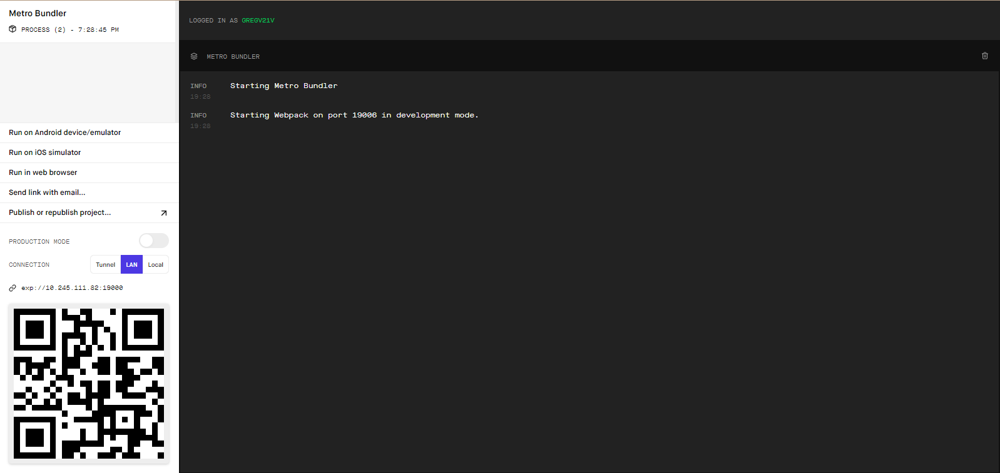

To test your app, you are going to need to start Expo with the following command:
expo start
Once you start Expo, a window will open in your browser giving you various options for ways that you can test your application.

If you click "Run in Web browser" a new window will open with the Expo starter code.
We are also going to test the app on ios devices. To test the ios app, you first have to build it. Expo allows you to build apps on a server, so you don't have to be running a macOS machine to develop ios apps. To build your app, type the following command:
expo build:ios
You will be asked what you want your bundle identifier to be. Just press enter and it will select the default. When you are asked the build type, select simulator, not archive. The app will now build. This will take a long time, which is why we will be mostly testing the app in the web version before we test it on our mobile devices. Feel free to close the window once it says you can. Doing so won't effect the build process.
Once the app is finished building, you can open the simulator on your phone and test your app that way. The simulator is available on the app store for both Andorid and ios. Its called Expo Client. You can recognize it by the upside down V logo.